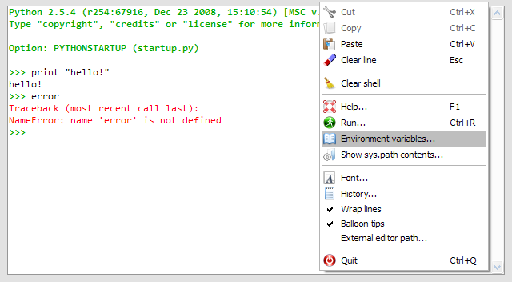

The Internal Console is dedicated to Spyder internal debugging or may be used as an embedded Python console in your own application. All the commands entered in the internal console are executed in the same process as Spyder’s, but the Internal Console may be executed in a separate thread (this is optional and for example this is not the case in Spyder itself).
The internal console support the following features:
- Code completion and calltips
- User Module Deleter (as in Console)
The following special commands are supported by the interactive console.
Edit script
edit foobar.py will open foobar.py with Spyder’s editor. xedit foobar.py will open foobar.py with the external editor.
Execute script
run foobar.py will execute foobar.py in interactive console.
Remove references
clear x, y will remove references named x and y.
Shell commands
!cmd will execute system command cmd (example !ls on Linux or !dir on Windows).
Python help
object? will show object‘s help in documentation viewer.
GUI-based editor
oedit(object) will open an appropriate GUI-based editor to modify object object and will return the result.